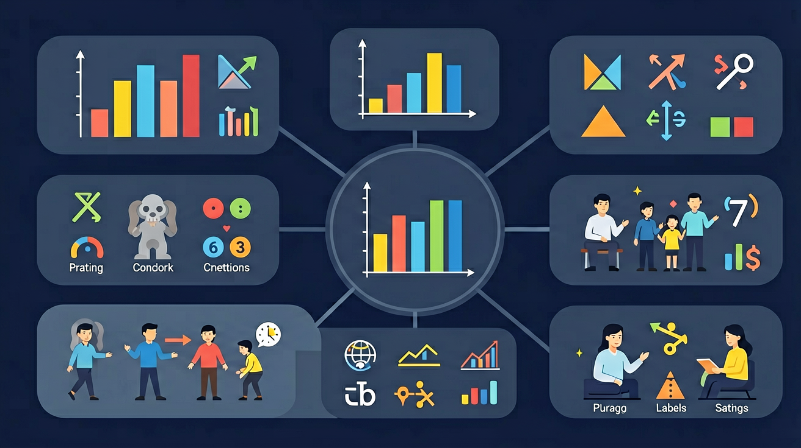

❓ 为什么有的统计图用小人表示人数，有的用柱子呢？
❓ 怎么知道一个小人代表多少个人呀？
❓ 画象形图时，人数太多画不下怎么办？
学完这一课，这些问题你都能自信地回答。
🎯 能说出象形统计图中每个符号代表的实际数量
🎯 能根据数据正确绘制简单的象形统计图
🎯 能比较象形统计图与条形统计图的异同点

在学习新内容之前，先测测你的基础知识！
Q1：什么是统计图？
Q2：如果🍎代表5个苹果，3个🍎代表几个苹果？
👩🏫 数学老师正在统计同学们最喜欢的水果，数据将变成象形统计图！
👆 点击按钮，让黑板上的统计图动起来！
象形统计图用图画或符号来表示数量，直观易读。
| 水果 | 象形图 | 人数 |
|---|---|---|
| 🍎 苹果 | 🍎🍎🍎🍎🍎 | 5人 |
| 🍌 香蕉 | 🍌🍌🍌🍌🍌🍌🍌 | 7人 |
| 🍊 橙子 | 🍊🍊🍊 | 3人 |
| 🍇 葡萄 | 🍇🍇🍇🍇🍇🍇 | 6人 |
| 特征 | 象形统计图 | 条形统计图 |
|---|---|---|
| 表示方式 | 图画/符号 | 长方形柱子 |
| 直观性 | 非常直观 | 较直观 |
| 适用 | 小数据，低年级 | 大数据，精确比较 |
| 读数方式 | 数图符个数 | 看柱子高度 |
点击"+"按钮，为每种宠物增加图符（🐾=1只）
拖动滑块改变图例（每符代表的数量），观察总数变化
你已掌握象形统计图的读图方法！
完成学习后，用这两道题检验你的掌握程度！
Q1：象形图中每个📚代表2本书，图中有4个📚，共几本书？
Q2：看象形图的第一步是什么？
记忆口诀：看图三步走——①先看图例（每图代几）②数图案数量③用乘法算总数。助记：象形图=图案×每个代表的数，就像计算"有几袋，每袋几个"一样。
⚠️ 如果你做错了，看看错在哪里：
如果你看象形图直接数图案数量，你忽略了图例的作用。每个图案可能代表2个、5个或10个，不看图例直接数会得出错误结论。
💡 自查方法：把答案代回原题验证，如果算出矛盾就说明中间有错误！
💡 背后的原理
🔍 本质：象形图是"比例缩放"的直观展示。图案代表的数量是比例因子，实际数量=图案数×比例因子。统计图的本质是让抽象数字变得直观可见。
回忆：今天学了哪些关键词和规则？试着说出来。
用自己的话解释今天学的核心概念，不看书能说清楚吗？
用今天的知识解决一个实际问题，或写一个新例子。
把今天的知识与已有知识联系起来：有什么共同点？有什么区别？能不能自己创造一道新题？
先独立作答，再点选项查看对错与错因。
如图，每个🍎代表2票，香蕉获得几个🍎图案？
哪种统计图能直接看出具体数量？
若草莓票数用5个🍓表示，每个🍓代表3人，改成条形图时柱子应到哪个数字？
如图象形图中每个🚌代表5人，3个🚌表示____人
答案：15
3×5=15
条形图中橘子柱子的高度对准数字8，表示喜欢橘子的人有____人
答案：8
直接读取刻度值
哪种说法正确？
收集步行、自行车、公交车、私家车四种方式的人数
✅ 先数符号个数，再乘单位量
💡 忽略图例说明
✅ 同类数据用相同符号
💡 未建立符号与数据的对应关系
And：学生已会用数字记录数量
But：不知道如何用图形直观表示数据
Therefore：学会用象形图整理杂乱数据
象形图是用小图画表示数量的统计图，每个图形代表相同数量。比如：调查班级同学最爱吃的水果，用🍎表示2人。如果喜欢苹果的有6人，就画3个🍎。关键要标清图例，像『1个🍎=2人』这样。
🌍 看天气预报时，晴天用☀️表示，雨天用🌧️表示，这就是象形图！比如周一有4个☀️，代表晴天有4天。
下图表示各小组捡的矿泉水瓶数量（1个♻️=5个瓶子），第三组画了4个♻️，实际捡了多少？
And：学生已能读懂简单象形图
But：自己画图时容易漏图例或算错数量
Therefore：掌握规范绘制象形图的方法
画象形图分三步：1. 先数清总数，比如调查发现12人坐公交上学；2. 确定每个图形代表的数量，如果定🚌=3人，12÷3=4，就画4个🚌；3. 在图下方写明『1个🚌=3人』。注意图形大小要一样，排列整齐！
🌍 体育老师用🏀统计各班借球数量，1个🏀代表10个球。三2班借了30个球，图上就画3个🏀。
根据数据画象形图（1个👦=4个学生），二班有16人，应该画几个👦？